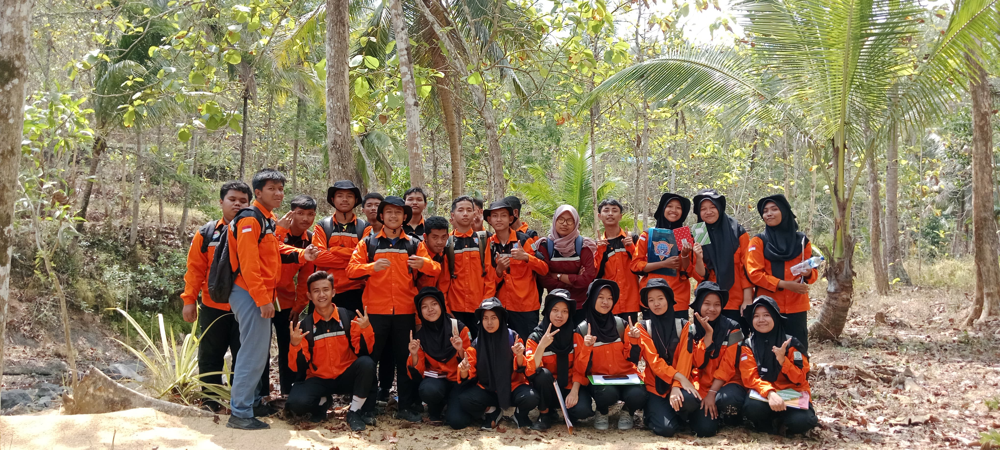

apa saja tentang kami?
geologi pertambangan adalah salah satu program keahlian di SMKN 1
Karanggayam, program keahlian ini dimulai pada tahun 2013. 4 tahun
setelah SMKN 1 Karanggayam diresmikan

selalu memberikan lulusan terbaik setiap tahun, sehingga dapat
bersaing di dunia kerja, dan dapat melanjutkan pendidikan di tingkat
selajutnya
geologi pertambangan merupakan program keahlian yang berjalan di
bidang energi dan pertambangan. mempelajari tentang bebatuan, mineral,
survey lapangan dan ilmu tentang kebumian lainnya